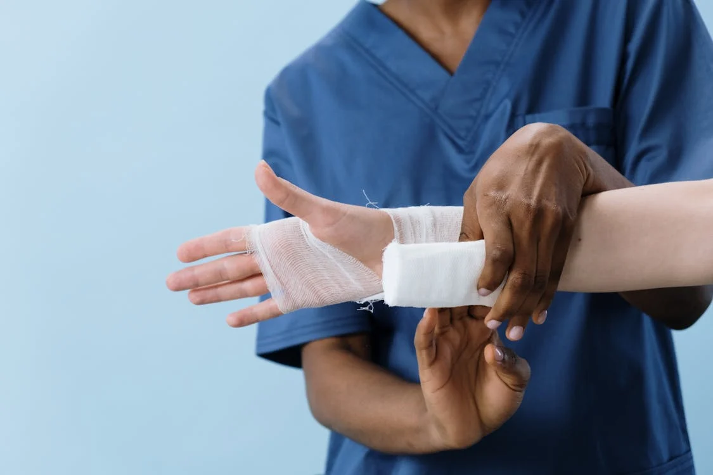

Pequenos Cortes e Arranhões
Lave o local com água corrente e sabão. Aplique um antisséptico e cubra o ferimento com um curativo ou gaze estéril. Mantenha o ferimento limpo e troque o curativo diariamente.
Ao final desta página, você encontrará um quiz para testar seus conhecimentos sobre primeiros socorros!
Lave o local com água corrente e sabão. Aplique um antisséptico e cubra o ferimento com um curativo ou gaze estéril. Mantenha o ferimento limpo e troque o curativo diariamente.
Resfrie a área queimada com água corrente por pelo menos 10 minutos. Não aplique gelo diretamente. Use uma pomada para queimaduras e cubra levemente com gaze esterilizada.
Eleve a área afetada, aplique compressas frias e evite movimentar a região lesionada. Consulte um médico se houver dor intensa.
Aplique pressão direta sobre o ferimento com um pano limpo e mantenha a pressão até que o sangramento pare. Eleve a área ferida e procure ajuda médica imediatamente.
Se a pessoa não conseguir respirar ou falar, faça a manobra de Heimlich: compressões rápidas para cima abaixo das costelas. Ligue para o serviço de emergência.
Deite a pessoa de costas, eleve as pernas e afrouxe as roupas. Se a pessoa não recuperar a consciência rapidamente, chame uma ambulância.

Desligue a fonte de energia antes de tocar na vítima. Se não estiver respirando, inicie a RCP enquanto aguarda ajuda médica.
Lave a área com água e sabão, aplique compressa fria e, se houver sinais de reação alérgica, procure atendimento médico imediatamente.
Evite mover a área fraturada, imobilize com uma tala e aplique gelo para reduzir o inchaço. Chame uma ambulância ou leve a pessoa ao hospital.

Inicie a RCP imediatamente (30 compressões no peito seguidas de 2 ventilações) e ligue para o serviço de emergência. Continue a RCP até a chegada de ajuda.
Teste seus conhecimentos sobre primeiros socorros respondendo às perguntas abaixo: